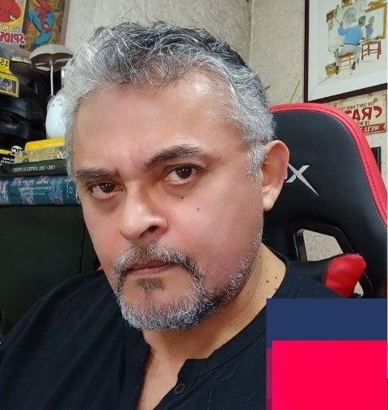

¿Quiénes somos?
Somos un Blog dedicado a informar, apoyar y difundir la narración gráfica, el dibujo animado, el arte, etc.
Javier Prado es su creador y su autor; creada el 14 de mayo de 2009. Si llegaste hasta aquí interesado en tener un amigo que hable de dibujos animados, cómics, ilustración y alguna otra cosa "friki y geeks", este es el lugar indicado. Aquí sabrás cómo es La Nuez.
Entrando en la categoría de Arte y entretenimiento, teniendo como objetivo dedicado a informar, apoyar y difundir la narración gráfica, el dibujo animado, el arte, etc.; siendo una página tipo blog. El tipo de contenido es Información dada por la UTIM (Universidad Tecnológica de Izúcar de Matamoros) además de que aborda temas como son ilustración, animación y dibujo. Enseña a dibujar y da consejos para hacerlo Da noticias e información sobre los ámbitos ya mencionados. Contenido apto para todos pues no cuenta con lenguaje difícil de abordar y el tema es apto para todas las edades.
El creador y autor
Javier Prado comunicador, caricaturista y dibujante animador, y editor del blog La Nuez.
No soy ni Este ni Oeste, soy solo Javier Prado, ilustrador, animador, caricaturista e historietista. Siempre supe que me dedicaría a dibujar, cosa que he hecho con evidente afán desde hace más de veinte años, en los que pasé por diversas producciones de cortometraje cinematográfico, comerciales de televisión, ilustración publicitaria y caricatura. Hace tres años, después de trabajar en un telefilm animado, decidí llevar a un blog la charla interminable con la que a veces torturo a mis amigos. De pronto me di cuenta que podía ser escuchado (o leído) sin límite de tiempo, y que la gente podía dejar mis interminables posts por un rato para ir por una taza de café y luego retomar el hilo de la conversación.
Contacto
Correo electrónico: